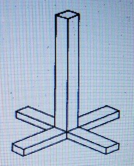
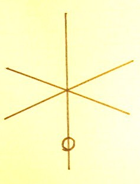
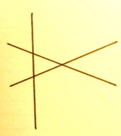

天津金木について
明主様御講話 「天津金木の法」 （昭和28年11月10日）
「とにかく世界の文明は現在物質文明と精神文明で、これを分かりやすく言えば、アメリカは緯の文明で日本は経の文明だ。
だから経と緯を結ばなければ本当の文明はできない。そこで救世教は緯の文明と経の文明を結ぶ計画なのだ。
だからちょうどあなたが来られたのは、その第一歩と思うと言ったら喜んでいました。
私らのバッジもそういう意味を現わしていると言ったのです。
バッジについて、ついでだから話しますが、バッジにこうして丸がありますが、これはこういう意味になります。
これでは本当ではないのです。もう一つ貫いているのです。
ですからこれを正面から見ると丸になります。そういう意味もあるのです。
昔から神道の方で非常に神秘とされている天津金木（あまつかなぎ）の法というのがあります。
この天津金木というのは、古い板にそういったものをこしらえたのです。
この四角いものをこういう具合に組んで、そうしてもう一つこうやるのです。
こういうものを御神体のように祭ってあるのです。
それで天皇が毎年正月元旦にそれに対して祈願するのです。
そうするとその年のいろいろな吉凶禍福、そういったものが浮かぶのです。
これはまた話が神秘な方面になりますが、天津金木の起こる前というのは、つまり玉座といって、真四角なのです。
その時分は畳か板か分かりませんが、そういったものを作って、それは十文字の形になって、その真ん中に神様が坐るのです。
それはつまり天照大御神様が統治されたときにそこに坐るのです。
そこで目をつぶっておられると、その国のいろいろなことが分かるのです。
それが天照大御神様がおかくれになって、その代わりとして天津金木というものをかかげたのです。
それが神秘なことで、神道の根本になるのです。神道家でもこのことは知らないでしょう。
そういうわけですが、バッジというのは、そればかりではありませんが、そういう意味もあるのです。
そういう神秘なことはいずれ話をするとして、今日はこの話はそのくらいにしておきます。」
明主様御講義 「天津金木」 （昭和10年7月15日発行）
「霊返しが出来たら、この次は天津金木（あまつかなぎ）と言う学問と云うよりも鍵がある。
これがあらゆるものゝ根本である。言霊、天文、地文、易、予言等の根本なのであるが、これを教え様とする人が未だないのである。
古事記の中の稗田阿礼（ひえだのあれ）が勅命により口述したのである。

天津金木は上の様な形のものである。
稗田阿礼はこの天津金木を背に負っていたのである。
古事記は天津金木の神秘が書いてあるのである。
さればなぜ文章に書かなかったかと云えば、文章に書けば命がなかった為である。
日本は言霊の幸う国、言葉の生くる国という国である。
今病気治しの時字を書くと、その書いた字の言葉が働くのである。
言霊で言えば直ちに強くなるのである。」 （観音講座 第一講座」より）
明主様御講話 「天津金木について」 （昭和10年4月5日）
「天津金木（あまつかなぎ）は、天照大神様が押し込められしためお身代わりとしてお作りになり伝えられたるものにして、これが判れば、森羅万象すべてのことはみな判るのである。
されど、いま書物などによってこれを知ることは絶対できないのである。
昔は口伝えにより伝えられ、稗田阿礼（ひえだのあれ）まで伝えられた宇宙の魂のごときものである。
私は、浦和にて古文書を見たるとき、霊感により知ったのである。
私は五十万年以前より五千年前までの歴史を知っているのである。
それは、神憑りになったとき知らされたのである。
昔の古い文書は神武天皇がお焼きになってしまったのであるが、そのとき、一人の家来が一部の物を持って逃げ、これを隠して土の中にいけ込んで置いた。
それが今に伝えられた。
これは、武内宿禰の家に伝えられ、例の天津教の武内家にあるものにして、
武内家には、その中にあった三種の神器の本物を持っているのであるが、
宮内省に献上しようとしたとき宮内省では受け付けなかったのである。
いよいよ大光明世界を建設するのは、二十五年くらい後のことにして、これは世界統一の時のことにして、日本だけなれば、まだ早くできるのである。
日光東照宮を型として戦場ケ原に一大神殿が建立される。
その柱のごときは、大理石の丸柱の上に金にて龍などを書きたる雄大なるものにして、その時分になれば、金などなにほどでも出るのである。
地軸は金の柱にて、直径十里くらいは太さがある。
これをもってしてもなにほど今後において出るか判らんのである。
この時のことを祝詞に書いてあるのであって、瓦のごときも金なのである。
「多宝仏塔聳（そそ）り建ち 七堂迦藍は霞みつつ 黄金の甍燦燦と」とあるごとくに事実なのである。
戦場ケ原は海抜四千尺の高原にして、三里四方平面の地にして、川あり滝あり、実に立派な所である。」
明主様御垂示 「天津金木について」 （昭和23年2月28日）
信者の質問
「天津金木（あまつかなぎ）とは・・・」
明主様御垂示
「これも半分きり説明できない。
神武天皇以前、その時の天皇が正月にこれを拝むと、その年の吉凶がわかる。
一種の占いですよ。
これは代々伝わって稗田阿礼（ひえだのあれ）の所にあった。
神武天皇に征服された日本人が代々口伝えしてついに丹波で百姓をしていた阿礼に至り、太安萬侶（おおのやすまろ）がそれを誌（しる）したのが「古事記」ですよ。
天津金木は地上天国の予言になっている。
いずれまた話そう。
あらゆる宗教がなくなってからこれを拝むようになる。」
明主様御垂示 「天津金木について」 （昭和23年3月19日）
「三尺位の棒で、図のごとく桧で造ったものである。
神武天皇以前の天皇は、毎年正月元日、この金木へ向って祈り
吉凶禍福を卜った。
祝詞には「天津金木を本打切り末打断ちて」とあるが、極く古い時代から神武以前まであった。
ズーッと以前（天神時代）は板で作り、

ここ（註 十字の真ん中の○部分）へ天皇が座して、神示を受けた。（これがなくなって檜となった）
それが素盞嗚尊に占領された。
金木はその時まで稗田阿礼の家へ代々伝わっていた。
また古事記も言い伝えになっていた。
そして古事記の事は代々言い伝えになっていた。
その頃の人は頭はよかった。
薬毒がなかったからである。
今の人間は頭が極端に悪くなっている。
太安萬侶に命じて探さしたところ、阿礼は丹波曾我部郡のある村で百姓していたという。
故に古事記と天津金木とは、非常に関係がある。」
明主様御垂示 「天津金木と見真実」

３尺 六角の木
「神武以前の天皇はこれを安置し元日に拝む。
すると、その年のいろんな事が判り、これが出る。
これは時期と魂の磨き方で、神から知らされる。
これが即ち見真実で、宇宙の秘された秘密である。
今

次
見真実

これが判れば予言が出来る
今までの事

明主様御垂示 「経緯結びの後の形」 （昭和24年8月4日）
信者の質問
「天津金木の十字は平面になった場合の縦横を示したものでしょうか。」
明主様御垂示
「経緯結んで
｜が立つと平面になる。
それが立ってから下へ抜ける。

単に十字の場合は立体でも平面でもよい。」